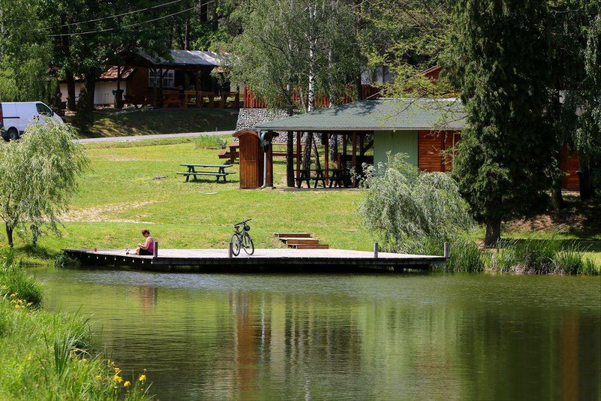
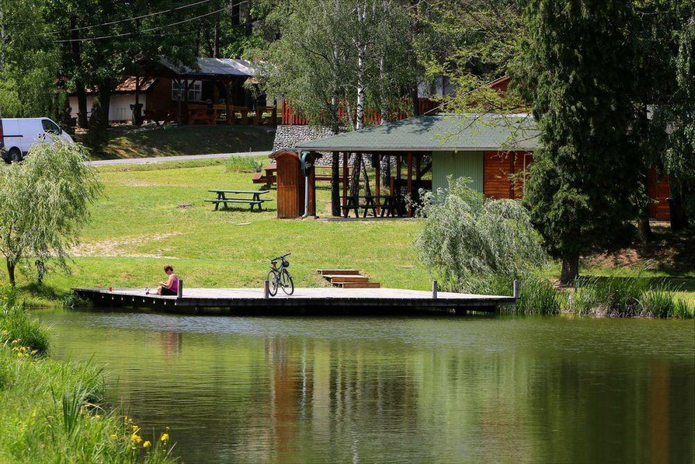

| Kialakulása: | duzzasztás |
| Vízfelszín: | 4 hektár |
| Vízmélység: | 4-5 méter |
| Itt található: | Hegyhátszentjakab Őrség, Vas megye |
A Vadása-patak felduzzasztásával keletkezett. Elnevezését onnan kapta, hogy a környéken sok volt a róka: ezek lyukakat ástak a patak mentén, így lett vad-ásta, Vadása-patak, illetve tó. Vizekristálytiszta, a tavat 12 forrás táplálja.
A Vadása-tó az Őrség egyik legismertebb üdülőövezete. Az Örségi Nemzeti Park jó járható turistaútjai itt futnak össze. A kis előtározó és a nagyobb, strandot is magába foglaló alsó tó egy kettős tó-együttest alkot. A felső tónál pazar kép fogadja a látogatót: rengeteg tuskó a vízben, sűrű erdő a parton. Az alsó tó, 'A Vadása' teljesen más jellegű: strand és sétáló emberek a parton, jobban érződik az üdülőövezet és a kemping hatása is. A keleti helyeknél kicsit mélyebb a víz.

 
